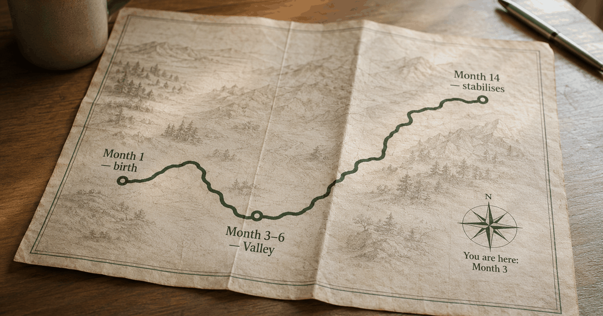

 ES
ESA note from Liza — I co-founded Regular and I'm a mom of one — not a researcher, I just dig into the studies so you don't have to. This is the map I wish someone had handed my partner. Why trust us.
Most couples hit the sharpest relationship strain in the 0–14 month window after their first baby, with the low point arriving around months 3–6 — not at birth. The 2023 DREAM study of 606 fathers (PLOS ONE) found that for first-time fathers, satisfaction kept declining through about 14 months before stabilising. This guide maps what's actually happening at each stage — and the one small thing that helps at each one.
Nobody gives you a map. You know the baby is coming, you've read the stroller reviews, you've watched the birthing video. What nobody mentions is that the relationship tends to keep getting harder for about a year, not easier — and that knowing this in advance is the only thing that makes it survivable.
I want to give you that map. Not to scare you. To stop you from spending month 6 convinced your marriage is uniquely broken, when you're actually just in the hardest part of a documented trajectory that nearly every first-time parent couple goes through.
Here's what the research actually shows, month by month — and the one small thing that helps at each stage.
Why the timeline exists at all
The decline is real, and it's near-universal: about 67% of couples report a significant drop in relationship satisfaction in the first three years after their first baby (Shapiro, Gottman & Carrere, 2000). The decline isn't random — it follows a pattern, and knowing the pattern helps.
The reason there's a timeline at all is that the transition to parenthood is one of the most disruptive identity shifts two people can go through simultaneously. You're not just tired. You're both relearning who you are, separately and together, while keeping a small person alive. That takes longer than anyone admits.
people across 49 independent studies showed marital satisfaction drops sharply in the first year of parenthood — for both partners, including fathers. The decline isn't a personal failure. It's a documented pattern.
The good news in the research: couples who navigate it with intentional small reconnection moves recover. Couples who wait it out hoping things improve on their own often find the distance has hardened by the time the sleep does. Worth noting too — the DREAM study found the decline is steeper for first-time fathers than for second-timers; if this is your second child, some of the shape of this timeline may feel gentler the second time around.
Months 0–3: The survival fog
The first three months don't require a relationship strategy — they require survival. Sleep deprivation, feeding, the sheer novelty of keeping a newborn alive. The disconnection you feel isn't a warning sign. It's the cost of shared crisis mode.
You're doing everything right. You're taking the night shifts, loading the dishwasher, holding the baby so she can sleep. You feel useful, you feel capable, and you feel completely invisible. That's not a contradiction — it's the first stage of the timeline.
Her attention has narrowed to the baby. It has to. Biologically and practically, her brain has reorganised around keeping a fragile newborn alive. You understand this intellectually. You just didn't expect it to feel like this.
"Men are comfortable supporting their pregnant partners, but feel less sure of what to do and maybe even irrelevant once the baby comes."Sarah Schoppe-Sullivan, PhD — Ohio State University New Parents Project
What actually helps in months 0–3: Name the season out loud. Not a heavy conversation — just the acknowledgment: "We're in survival mode right now. That's what this is." Naming the chaos as temporary and shared stops you from reading her withdrawal as something permanent, and stops her from reading your quiet as detachment. You're not growing apart. You're just in the fog.
Months 3–6: The hidden low point
Months 3–6 are counterintuitively harder than the newborn stage. The adrenaline fades, routines lock in, and the couple relationship quietly drops to last place on both your priority lists. This is also when paternal depression peaks — at roughly 9% of new fathers, per Rao et al. (2020).
By month three the visitors have stopped coming, the novelty has worn off, and both of you are surviving rather than thriving. You've become efficient co-parents — someone takes the morning shift, someone takes bath time — but the efficiency has swallowed the friendship.
This is what researchers call the "efficiency trap." You've optimised for managing the baby together. What you haven't maintained is the channel where you're just two people who chose each other. She's not cold. She's not pulling away. She's running on empty and you've both quietly stopped reaching. It's the same terrain many dads describe as the quiet loneliness of the first year.
of new fathers experience postpartum depression — and the rate peaks around months 3–6. It often looks like irritability and numbness, not sadness. It's also when the risk of the roommate pattern setting in is highest.
What actually helps in months 3–6: Replace the big talk with one small, specific ask. Swap "I feel disconnected" — which lands as one more thing she has to fix — for "Can we have ten minutes tonight, just the two of us, no baby talk?" Specific is easy to say yes to. Vague feels like homework.
Months 6–9: The roommate danger zone
By months 6–9, you've built a working family system — and the system is quietly replacing the couple. You're co-managers of a small operation. The words "we are just parents, not a couple" appear at this exact stage more than any other. This is the most common moment dads describe as the point where they first wondered if something was actually wrong.
The baby is becoming interactive — smiling, reaching, more fun. You're sleeping a little better. On paper, things should be improving. But you and her are still on parallel tracks, moving efficiently through the day without making contact in the way that matters. For some couples this is also when the quiet stall in the bedroom starts to feel permanent rather than temporary.
"My husband says we're just roommates."A phrase that recurs across new-parent forums at this exact stage
What's tricky about this stage is that the logistics are working, so there's less obvious urgency. The house is running. The baby is fine. You can almost convince yourself the distance is normal — except that by month nine, you've been drifting for six months, and drift compounds.
What actually helps in months 6–9: A daily five-minute check-in that isn't logistics. Not "who's doing bath?" — something real. "How are you actually today?" If you don't know what to say, a structured prompt removes the awkwardness and makes it a habit instead of a performance. This is the heart of how you reconnect with your wife after a baby — small and daily, not grand and rare.
Months 9–12: The first glimmers
By months 9–12, the baby is more interactive, sleep is usually improving, and she starts to surface from the pure survival focus. This is the first window where reconnection becomes genuinely possible — not just maintenance, but actual warmth. It's also the window where what you've built over the last few months either pays off or hardens into habit.
Here's what matters at this stage: small appreciations. Not grand gestures, not apologies for the hard months. One specific observation, daily. "The way you handled that meltdown this morning was remarkable." "You look exactly like yourself today." Gottman's research links a 5:1 ratio of positive-to-negative moments to relationships that last — and one genuine, specific appreciation a day is the smallest habit that starts moving the ratio.
positive-to-negative interactions is the ratio that predicts relationship longevity, according to Gottman Institute research. One specific daily appreciation is the minimum viable habit that starts moving it.
What actually helps in months 9–12: Name one specific appreciation every day. Not "thanks for dinner" — something you actually noticed: what she did, how she did it, what it meant. This isn't performance. It's the habit that rebuilds the friend underneath the co-parent.
Month 12 and beyond: Building the new baseline
By 12 months, most couples begin to stabilise — but stabilise around whatever baseline they've been building. The ones who've maintained small daily reconnection rituals stabilise with warmth. The ones who've been waiting for things to return to normal find themselves closer to strangers. The research is unambiguous: left to itself, the decline from the first year can persist for eight years (Doss et al., 2009).
The most important reframe at this stage is the one from "returning to normal" to "building something new." The couple you were before the baby didn't know what you know now. They'd never navigated a crisis together. They'd never been cracked open and had to decide what to build with the pieces.
The Japanese concept of kintsugi — repairing broken pottery with gold so the cracks become the most beautiful part — is the closest metaphor I've found for what healthy couples do after the first year. Not hiding the damage. Not pretending nothing changed. Building something that's more deliberately made, and harder to break because of it.
What actually helps at 12+ months: Stop measuring against before. Set one small, non-negotiable ritual — five minutes, one appreciation, one real question — and make it the floor. You're not restoring the old relationship. You're building one that's already survived the hardest year you'll ever share.
The full map at a glance
Here's the whole first year in one view: strain usually peaks in the newborn months (0–3), stays heavy through the 4–6 month sleep-deprivation stretch, and most couples start clearly rebuilding closeness by months 9–12. The table maps what's normal at each stage and what's worth checking.
| Month | Main challenge | Common trigger | Watch for | What helps |
|---|---|---|---|---|
| 0–3 | Survival fog | Sleep deprivation, identity shock | Reading her withdrawal as rejection | Name the season: "we're in survival mode" |
| 3–6 | Efficiency trap | Routines replace friendship | Paternal depression (~9% peaks here) | One specific small request instead of a big talk |
| 6–9 | Roommate pattern | Co-managing without connecting | "Just parents, not a couple" hardening | Daily 5-minute non-logistics check-in |
| 9–12 | Reconnection window | Baby more interactive, sleep improving | Missing the opening because old habits persist | One specific appreciation daily |
| 12+ | Building the new baseline | Expecting "return to normal" | Measuring against before instead of building forward | Reframe: build new, don't restore old |
One last note for the growing family: if you're reading this heading into a second baby, the shape shifts again — the second-time dad's relationship rebound tends to be less steep, because you've already run this gauntlet once and you know the fog lifts.
Frequently asked questions
How long does the disconnection after a baby last?
For most couples the hardest window is the first 14 months, and the decline doesn't stop right after birth — it often deepens through months 3–6 before it plateaus. The DREAM study (Mack, Brunke et al., PLOS ONE, 2023) followed 606 fathers, about 500 of them first-time, and found that for first-timers relationship satisfaction kept declining through roughly 14 months. By the second year, most couples begin to stabilise — but only with intentional daily reconnection. Left without it, the drop can linger for years (Doss et al., 2009).
Is it normal to feel like roommates with your wife after a baby?
"We are just parents, not a couple" is one of the most common phrases new dads use on forums and in research interviews. It's the natural result of two people switching into logistics mode without maintaining a parallel channel of friendship. The roommate pattern typically peaks around months 6–9. It's common, not permanent, and naming it together is the first step out.
When do couples start feeling like themselves again after a baby?
Research consistently shows relationship satisfaction begins to stabilise around 12–18 months for most couples. The Bogdan, Turliuc & Candel meta-analysis (2022, Frontiers in Psychology) of 145,139 people found the sharpest drop in the first year, with gradual recovery in the second. The key variable isn't time — it's whether the couple has been actively reconnecting during the hard months.
Why does the relationship feel worse at 3–6 months than right after birth?
The first weeks run on adrenaline and novelty. By month 3 that's gone and routines have locked in — but the couple relationship has quietly dropped to last place. This is the "efficiency trap": co-parenting is working, but the friendship underneath it is starving. Paternal depression peaks at this exact window (Rao et al., 2020).
What's the hardest month for new dads emotionally?
Months 3–6. The newborn intensity has eased enough that you expect things to improve — but relationship satisfaction often continues to decline, and the disconnection feels more deliberate than it did in early chaos. This is also when paternal postpartum depression peaks. If you're feeling flat most of the day and increasingly like you're running the family alone, those are worth taking seriously.
What should a new dad do to improve the relationship in the first year?
The most effective moves are small and daily, not grand and occasional: name the season together ("we're in survival mode"), replace vague emotional conversations with one specific request, add a five-minute daily check-in that isn't logistics, and name one appreciation each day. The couples who recover fastest are the ones who stopped waiting for the right mood and made one small ritual non-negotiable.
Keep readingHow to reconnect with your wife after a baby · Lonely as a new dad? Why it happens and what helps · Dead bedroom after baby: what's normal and what helps · What the Vikings knew about welcoming new dads
Co-founder of Regular. Writes about relationships, parenthood, and the science of how couples stay close after a baby.
About Regular — the relationship app for new dads, built by a small team of parents who needed it themselves. Small, science-backed moves with your partner, not big talks.